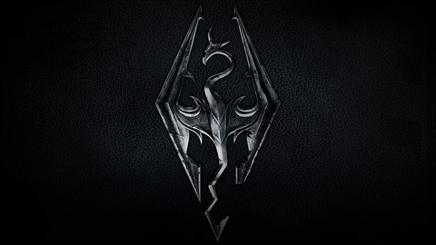
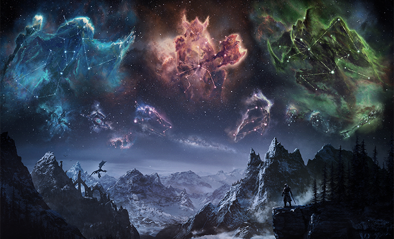

The Elder Scrolls V: Skyrim, more commonly referred to in the gaming community as "Skyrim", is a video game that released November 11th, 2011 for Microsoft Windows, Xbox 360, and Playstation 3. Skyrim is an open world RPG (Role-playing Game) set in a fantasy world full of magic and mythical creatures. When dragons once again plague the land of Skyrim, it is up to you to put a stop to them. Using your special powers as the "Dragonborn", you must find out how the dragons have returned and save Skyrim.
Skyrim is my favorite game of all time for many reasons. One of the best parts about the game is that there are so many options, you can play it over and over again and get a new experience every time. The character customization allows you to choose from a variety of different mythical races, each with their own unique traits and abilites. There are also many different options when it comes to combat; you can play it stealthy by being a sneaky archer, get up close and personal with a sword and shield, or even learn hundreds of different magic spells to cast at your enemies. On top of that, there are many different factions you can join in the game. You can choose to join the Empire or the Stormcloacks in their war for rule over Skyrim, or you can become a vampire hunter by joining the Dawnguard, and if you're feeling mischievous you can join criminal factions like the thieves guild or the assassins brotherhood.
Skyrim is the 5th game in the series, Elder Scrolls. Check out this table to see the other games!
| Title | Release Date | Platform |
| The Elder Scrolls: Arena | 1994 | DOS |
| The Elder Scolls II: Daggerfall | 1996 | DOS |
| The Elder Scrolls III: Morrowind | 2002 | Windows, Xbox |
| The Elder Scrolls IV: Oblivion | 2006 | Windows, Xbox 360, PS3 |
| The Elder Scrolls V: Skyrim | 2011 | Windows, Xbox 360, PS3 |
If you're interested in Skyrim, click the links below to learn more!